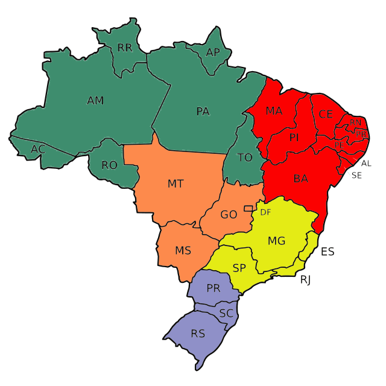

Mapa do Brasil
VOLTAR PARA HOME

Minas Gerais
CLIMA
Tropical de altitude, tropical e semiárido.
POPULAÇÃO
21.393.441 habitantes.
ALTITUDE
Entre 700 e 1.500 metros na maior parte do território.
VEGETAÇÃO
Cerrado, mata atlântica e caatinga.
Fechar
Mato Grosso
CLIMA
Equatorial e tropical.
POPULAÇÃO
~3,6 milhões.
ALTITUDE
200 a 600 metros (predomínio de planícies e planaltos baixos).
VEGETAÇÃO
Amazônia, cerrado e pantanal.
Fechar
São Paulo
CLIMA
Tropical, tropical de altitude e subtropical.
POPULAÇÃO
~44,4 milhões.
ALTITUDE
300 a 900 metros (interior); áreas serranas acima de 1.500 metros.
VEGETAÇÃO
Mata Atlântica e cerrado.
Fechar
Rio de Janeiro
CLIMA
Tropical atlântico e tropical de altitude.
POPULAÇÃO
~16 milhões.
ALTITUDE
0 a 200 metros (litoral); 800 a 2.300 metros (serra).
VEGETAÇÃO
Mata Atlântica e vegetação litorânea.
Fechar